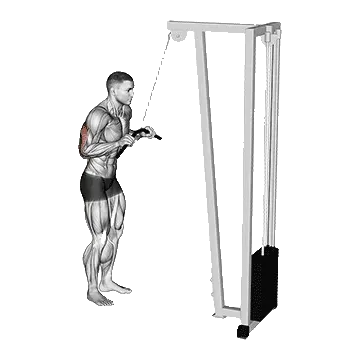

Jalón de tríceps
Jalón de tríceps permite consultar el peso medio y los estándares de fuerza como referencia dentro de brazos. Los músculos principales son Tríceps braquial, Bíceps braquial.

Peso medio: Intermedio
Referencia para una persona de nivel intermedio.
Hombres
125 lb
Mujeres
69 lb
Peso medio de Jalón de tríceps [1RM]
| Nivel | ||
|---|---|---|
| Principiante | 38 lb | 19 lb |
| Novato | 74 lb | 39 lb |
| Intermedio | 125 lb | 69 lb |
| Avanzado | 189 lb | 107 lb |
| Élite | 262 lb | 152 lb |
Nota: estos estándares son estimaciones de 1RM basadas en levantadores promedio. Pueden variar según el peso corporal, la edad y otros factores personales. Consulta los datos detallados en la tabla inferior.
Estándares de fuerza de Jalón de tríceps (lb)
Hombres por peso corporal (lb) [1RM]
| Peso corporal | Principiante | Novato | Intermedio | Avanzado | Élite |
|---|---|---|---|---|---|
| 110 | 16 | 40 | 76 | 124 | 181 |
| 120 | 20 | 46 | 85 | 135 | 194 |
| 130 | 25 | 53 | 93 | 145 | 206 |
| 140 | 29 | 59 | 101 | 155 | 218 |
| 150 | 33 | 64 | 109 | 165 | 229 |
| 160 | 37 | 70 | 116 | 174 | 240 |
| 170 | 41 | 76 | 123 | 183 | 250 |
| 180 | 45 | 81 | 130 | 191 | 260 |
| 190 | 49 | 87 | 137 | 199 | 269 |
| 200 | 53 | 92 | 144 | 207 | 279 |
| 210 | 57 | 97 | 150 | 215 | 287 |
| 220 | 61 | 102 | 156 | 222 | 296 |
| 230 | 65 | 107 | 163 | 230 | 304 |
| 240 | 69 | 112 | 169 | 237 | 313 |
| 250 | 72 | 117 | 174 | 244 | 320 |
| 260 | 76 | 121 | 180 | 250 | 328 |
| 270 | 80 | 126 | 186 | 257 | 336 |
| 280 | 83 | 130 | 191 | 263 | 343 |
| 290 | 87 | 135 | 196 | 269 | 350 |
| 300 | 90 | 139 | 201 | 275 | 357 |
| 310 | 94 | 143 | 207 | 281 | 364 |
Hombres por edad [1RM]
| Edad | Principiante | Novato | Intermedio | Avanzado | Élite |
|---|---|---|---|---|---|
| 15 | 33 | 63 | 107 | 161 | 224 |
| 20 | 37 | 73 | 122 | 184 | 256 |
| 25 | 38 | 74 | 125 | 189 | 262 |
| 30 | 38 | 74 | 125 | 189 | 262 |
| 35 | 38 | 74 | 125 | 189 | 262 |
| 40 | 38 | 74 | 125 | 189 | 262 |
| 45 | 36 | 71 | 119 | 179 | 249 |
| 50 | 34 | 66 | 112 | 168 | 234 |
| 55 | 31 | 61 | 103 | 156 | 216 |
| 60 | 29 | 56 | 94 | 142 | 197 |
| 65 | 26 | 51 | 85 | 128 | 178 |
| 70 | 23 | 45 | 76 | 115 | 160 |
| 75 | 21 | 41 | 68 | 103 | 143 |
| 80 | 19 | 36 | 61 | 92 | 128 |
| 85 | 17 | 33 | 55 | 83 | 115 |
| 90 | 15 | 29 | 49 | 74 | 103 |
Mujeres por peso corporal (lb) [1RM]
| Peso corporal | Principiante | Novato | Intermedio | Avanzado | Élite |
|---|---|---|---|---|---|
| 90 | 9 | 23 | 46 | 76 | 113 |
| 100 | 11 | 27 | 51 | 83 | 120 |
| 110 | 13 | 30 | 55 | 88 | 127 |
| 120 | 15 | 33 | 60 | 94 | 134 |
| 130 | 17 | 36 | 64 | 99 | 140 |
| 140 | 19 | 39 | 68 | 104 | 146 |
| 150 | 21 | 42 | 71 | 108 | 151 |
| 160 | 23 | 45 | 75 | 113 | 156 |
| 170 | 25 | 48 | 79 | 117 | 161 |
| 180 | 27 | 50 | 82 | 121 | 166 |
| 190 | 29 | 53 | 85 | 125 | 171 |
| 200 | 31 | 55 | 88 | 129 | 175 |
| 210 | 33 | 58 | 91 | 133 | 179 |
| 220 | 34 | 60 | 94 | 136 | 183 |
| 230 | 36 | 62 | 97 | 140 | 187 |
| 240 | 38 | 64 | 100 | 143 | 191 |
| 250 | 39 | 67 | 102 | 146 | 195 |
| 260 | 41 | 69 | 105 | 149 | 198 |
Mujeres por edad [1RM]
| Edad | Principiante | Novato | Intermedio | Avanzado | Élite |
|---|---|---|---|---|---|
| 15 | 16 | 33 | 59 | 92 | 129 |
| 20 | 18 | 38 | 67 | 105 | 148 |
| 25 | 19 | 39 | 69 | 107 | 152 |
| 30 | 19 | 39 | 69 | 107 | 152 |
| 35 | 19 | 39 | 69 | 107 | 152 |
| 40 | 19 | 39 | 69 | 107 | 152 |
| 45 | 18 | 37 | 66 | 102 | 144 |
| 50 | 17 | 35 | 62 | 96 | 135 |
| 55 | 15 | 32 | 57 | 89 | 125 |
| 60 | 14 | 30 | 52 | 81 | 114 |
| 65 | 13 | 27 | 47 | 73 | 103 |
| 70 | 11 | 24 | 42 | 65 | 93 |
| 75 | 10 | 21 | 38 | 59 | 83 |
| 80 | 9 | 19 | 34 | 52 | 74 |
| 85 | 8 | 17 | 30 | 47 | 66 |
| 90 | 7 | 15 | 27 | 42 | 60 |
Nota: una barra estándar de gimnasio suele pesar 44 lb.
Registra y analiza en la app Shiba
Consulta pesos, repeticiones y progreso en un solo lugar.
Cómo leer la tabla
| Nivel | Descripción | Distribución |
|---|---|---|
| Principiante | Domina la técnica correcta y entrena de forma constante durante al menos 1 mes. | Parte inferior 5% |
| Novato | Entrena de forma constante durante al menos 6 meses. | Top 80% |
| Intermedio | Entrena de forma constante durante al menos 2 años. | Top 50% |
| Avanzado | Entrena de forma constante durante más de 5 años. | Top 20% |
| Élite | Entrena este ejercicio de forma especializada durante más de 5 años. | Top 5% |
Otros ejercicios
Brazos
Skull crusher
Brazos
Triceps rope pushdown
Brazos
Jalón de tríceps a un brazo
Brazos
Triceps extensión con mancuernas
Brazos / Mancuernas
Extensión de tríceps
Brazos / Barra
Triceps extensión tumbado con mancuernas
Brazos / Mancuernas
Dips sentado en máquina
Brazos / Máquina
Patada con mancuernas
Brazos / Mancuernas
Overhead extensión en cable
Brazos / Cable
Triceps extensión en máquina
Brazos / Máquina
French press sentado con mancuernas
Brazos / Mancuernas
Pushdown agarre inverso
Brazos